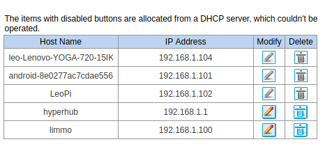

Network Address Translation
It is used in routers to translate a set of IP addresses to another set of IP addresses. It helps to preserver the limited amount of IPv4 public IP addresses.
graph LR
A[Public IP] --> B([NAT]);
B --> C[Private IP1];
B --> D[Private IP2];
NAT assigns private ip addresses to each device under the same router. This private ip addresses are not directly accessible from the Internet.
However, in the future we do not need private IP addresses, since there are more number of IPv6 addresses.

Important Notes
- Every kind of IP addresses changes over time, no matter it is public or private. For example, if router reboots, every ip address of connected device resets. So they are dynamic.
- In order to get static public ip address, we need to purchase one.
- To make static private ip, we need address reservation.
References